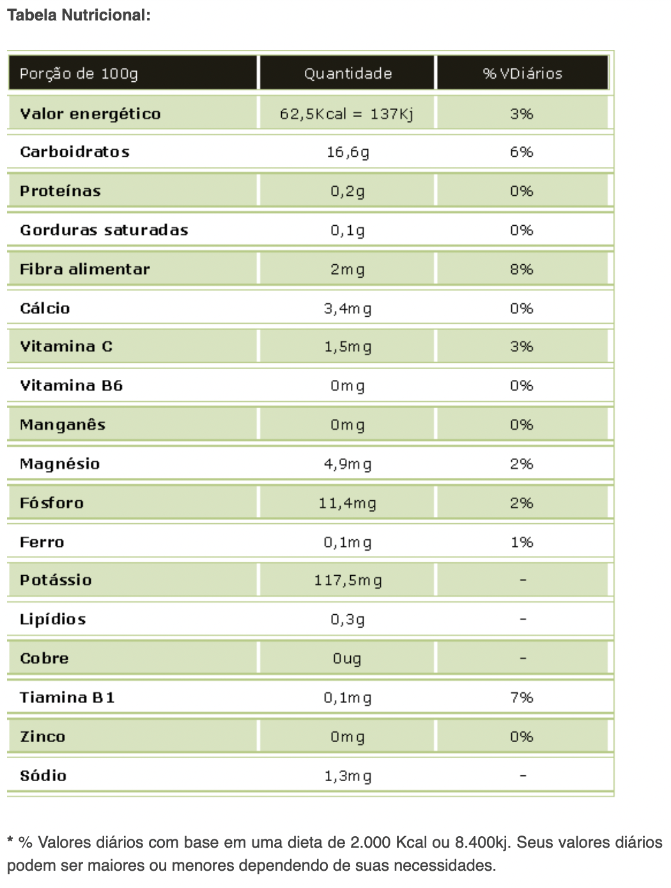

Maça Gala
Rica em Fibras, Vitaminas B1 e B2 e sais minerais (Fósforo e Ferro). Auxilia o bom funcionamento intestinal, tem propriedades anti-inflamatórias, antibacterianas e antivirais. Combate os radicais livres por conter Flavonoides, previne o envelhecimento precoce. Colabora com a higiene bucal, limpando os dentes e fortalecendo as gengivas. A casca pode ser aproveitada para o preparo de chá, servindo como diurético. Ao comprá-la, observe o aspecto da casca, se a polpa está firme e sem rachaduras.
